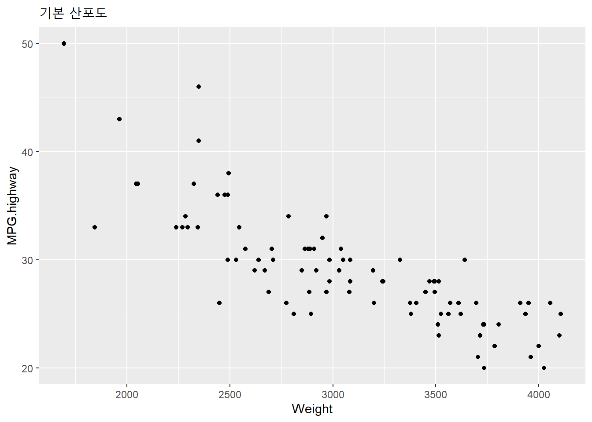
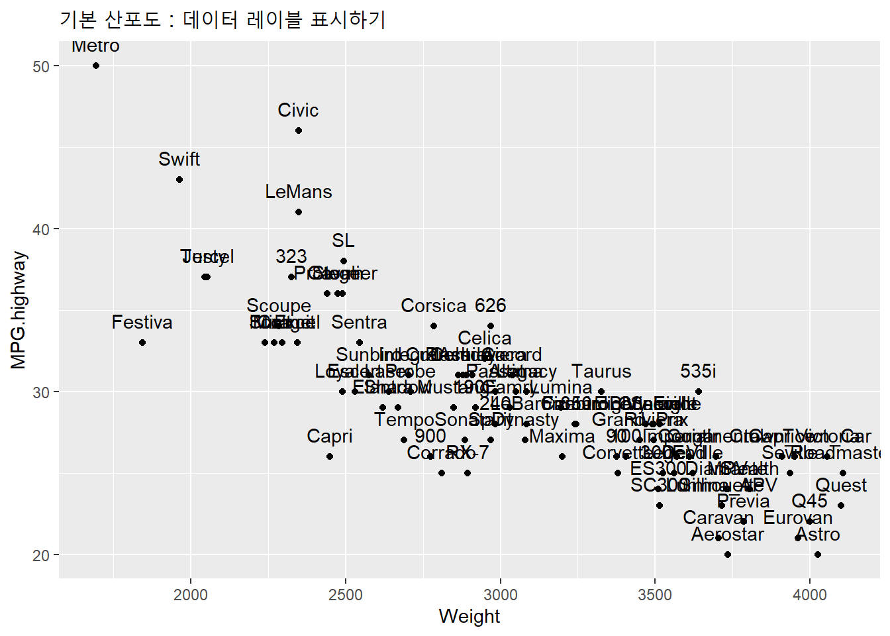
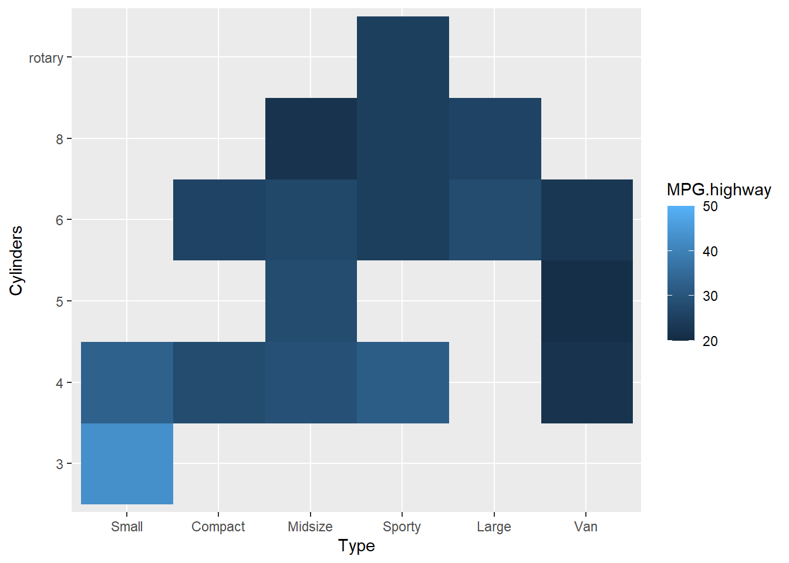
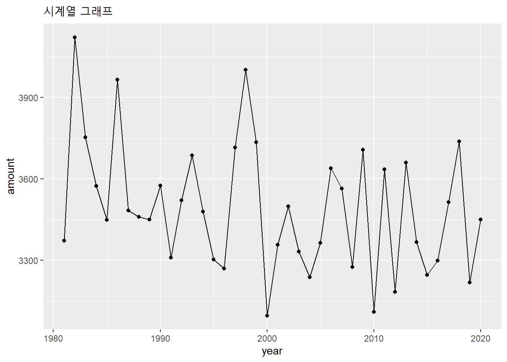

13.2 별 그래프
이번 포스팅에서는 (2) 별 그래프 (star graph)에 대해서 소개하겠습니다.
graphics Package의 stars() 함수를 사용하겠습니다. graphics Package는 base Package로서 R 설치할 때 기본으로 설치되므로 stars() 함수를 사용하기 위해 추가로 별도 패키지 설치는 필요하지 않습니다.
stars() 함수는 dataframe 이나 matrix 형태의 데이터셋을 사용합니다. scale = TRUE 옵션을 사용하면 (minimum value) 0 ~ (maximum value) 1 사이의 값으로 다변량 변수들의 값을 표준화해줍니다. 별 그래프(star graph)의 기본 원리는 중심점(center point)으로 부터 각 관측치별/ 각 변수별로 거리(distance) 혹은 반지름(radius)이 얼마나 떨어져있는가를 시각화한 것입니다.
13.2.1 데이터 세트
실습을 위해서 MASS Package에 내장된 Cars93 dataframe을 사용하겠습니다. 이전 포스팅 레이더 차트(radar chart) 와 비교하기 쉽도록 이번에도 차종(Type), 가격(Price), 고속도로연비(MPG.highway), 마력(Horsepower), 분당회전수(RPM), 길이(Length), 무게(Weight) 의 7개 변수를 똑같이 사용하겠습니다.
library(MASS)
str(Cars93)## 'data.frame': 93 obs. of 27 variables:
## $ Manufacturer : Factor w/ 32 levels "Acura","Audi",..: 1 1 2 2 3 4 4 4 4 5 ...
## $ Model : Factor w/ 93 levels "100","190E","240",..: 49 56 9 1 6 24 54 74 73 35 ...
## $ Type : Factor w/ 6 levels "Compact","Large",..: 4 3 1 3 3 3 2 2 3 2 ...
## $ Min.Price : num 12.9 29.2 25.9 30.8 23.7 14.2 19.9 22.6 26.3 33 ...
## $ Price : num 15.9 33.9 29.1 37.7 30 15.7 20.8 23.7 26.3 34.7 ...
## $ Max.Price : num 18.8 38.7 32.3 44.6 36.2 17.3 21.7 24.9 26.3 36.3 ...
## $ MPG.city : int 25 18 20 19 22 22 19 16 19 16 ...
## $ MPG.highway : int 31 25 26 26 30 31 28 25 27 25 ...
## $ AirBags : Factor w/ 3 levels "Driver & Passenger",..: 3 1 2 1 2 2 2 2 2 2 ...
## $ DriveTrain : Factor w/ 3 levels "4WD","Front",..: 2 2 2 2 3 2 2 3 2 2 ...
## $ Cylinders : Factor w/ 6 levels "3","4","5","6",..: 2 4 4 4 2 2 4 4 4 5 ...
## $ EngineSize : num 1.8 3.2 2.8 2.8 3.5 2.2 3.8 5.7 3.8 4.9 ...
## $ Horsepower : int 140 200 172 172 208 110 170 180 170 200 ...
## $ RPM : int 6300 5500 5500 5500 5700 5200 4800 4000 4800 4100 ...
## $ Rev.per.mile : int 2890 2335 2280 2535 2545 2565 1570 1320 1690 1510 ...
## $ Man.trans.avail : Factor w/ 2 levels "No","Yes": 2 2 2 2 2 1 1 1 1 1 ...
## $ Fuel.tank.capacity: num 13.2 18 16.9 21.1 21.1 16.4 18 23 18.8 18 ...
## $ Passengers : int 5 5 5 6 4 6 6 6 5 6 ...
## $ Length : int 177 195 180 193 186 189 200 216 198 206 ...
## $ Wheelbase : int 102 115 102 106 109 105 111 116 108 114 ...
## $ Width : int 68 71 67 70 69 69 74 78 73 73 ...
## $ Turn.circle : int 37 38 37 37 39 41 42 45 41 43 ...
## $ Rear.seat.room : num 26.5 30 28 31 27 28 30.5 30.5 26.5 35 ...
## $ Luggage.room : int 11 15 14 17 13 16 17 21 14 18 ...
## $ Weight : int 2705 3560 3375 3405 3640 2880 3470 4105 3495 3620 ...
## $ Origin : Factor w/ 2 levels "USA","non-USA": 2 2 2 2 2 1 1 1 1 1 ...
## $ Make : Factor w/ 93 levels "Acura Integra",..: 1 2 4 3 5 6 7 9 8 10 ...13.2.2 데이터 처리
13.2.2.1 요약 통계량 구하기
93개의 차량 관측치가 있는데요, 이것을 6개의 차종(Type)을 기준으로 평균 통계량으로 요약한 후에, 차종별로 6개의 평균치 다변량 변수를 가지고 별 그래프를 그려보겠습니다.
# cross tabulation by Car Type
table(Cars93$Type)##
## Compact Large Midsize Small Sporty Van
## 16 11 22 21 14 9# mean of multivariates by Car Type
# install.packages("doBy")
library(doBy)
mean_by_Type <- summaryBy(MPG.highway + RPM + Horsepower + Weight + Length + Price ~ Type,
data=Cars93,
FUN = c(mean))
mean_by_Type## Type MPG.highway.mean RPM.mean Horsepower.mean Weight.mean Length.mean
## 1 Compact 30 5362 131 2918 182
## 2 Large 27 4673 179 3695 205
## 3 Midsize 27 5336 173 3400 193
## 4 Small 35 5633 91 2313 167
## 5 Sporty 29 5393 160 2900 175
## 6 Van 22 4744 149 3831 186
## Price.mean
## 1 18
## 2 24
## 3 27
## 4 10
## 5 19
## 6 1913.2.2.2 라벨링하기
stars() 함수에서는rownames 를 가져다가 labeling 을 합니다. 현재 rownames 는 1, 2,…, 6 의 숫자로 되어있으므로, 이를 차종(Type) 이름으로 변경하도록 하겠습니다.
# creating row names with Type
rownames(mean_by_Type) <- mean_by_Type$Type
mean_by_Type## Type MPG.highway.mean RPM.mean Horsepower.mean Weight.mean
## Compact Compact 30 5362 131 2918
## Large Large 27 4673 179 3695
## Midsize Midsize 27 5336 173 3400
## Small Small 35 5633 91 2313
## Sporty Sporty 29 5393 160 2900
## Van Van 22 4744 149 3831
## Length.mean Price.mean
## Compact 182 18
## Large 205 24
## Midsize 193 27
## Small 167 10
## Sporty 175 19
## Van 186 19위에서 rownames() 로 뭐가 바뀌었나 잘 모를수도 있는데요, 아래에 화면 캡쳐한 그래프를 참고하시기 바랍니다. 제일 왼쪽에 rowname 이 숫자에서 차종(Type)으로 바뀐게 보이지요?
13.2.2.3 변수명 바꾸기
doBy Package로 요약통계량을 생성하면 변수명 뒤에 자동으로 통계량 이름이 따라 붙습니다. 이번 예제의 경우에는 평균을 구했으므로 MPG.highway.mean, RPM.mean, … 이런 식으로요. 변수명이 너무 길다보니 나중에 labeling 할 때 옆으로 삐죽 튀어나가서 보기 싫어서요, 변수명을 좀더 짧게 변경해보겠습니다.
변수명 뒤에 .mean 을 생략하고 사용하겠습니다. 위에 rownames() 함수는 stars() 함수를 사용하려면 꼭 해줘야 하는 것이구요, 아래의 renames()는 필수사항은 아닙니다.
# renaming of variables
library(reshape)
mean_by_Type <- rename(mean_by_Type,
c(MPG.highway.mean = "MPG.highway",
RPM.mean = "RPM",
Horsepower.mean = "Horsepower",
Weight.mean = "Weight",
Length.mean = "Length",
Price.mean = "Price"
)
)
mean_by_Type## Type MPG.highway RPM Horsepower Weight Length Price
## Compact Compact 30 5362 131 2918 182 18
## Large Large 27 4673 179 3695 205 24
## Midsize Midsize 27 5336 173 3400 193 27
## Small Small 35 5633 91 2313 167 10
## Sporty Sporty 29 5393 160 2900 175 19
## Van Van 22 4744 149 3831 186 1913.2.3 별 그래프 그리기
이제 드디어 데이터셋이 준비가 되었습니다. stars() 함수를 사용해서 별 그래프를 그려보겠습니다.
13.2.3.1 stars() 함수의 형식
stars(x, …) 의 x 자리에는 dataframe 이나 matrix 형태의 다변량 데이터셋 이름을 입력하면 됩니다.
locations = NULL, nrow = 2, ncol = 4 옵션은 행이 2줄, 열이 4줄인 square layout 으로 배열하라는 뜻입니다.
scale = TRUE 는 변수별로 단위(scale)가 달라서 들쭉날쭉한 값들을 변수별로 모두 최소값 0 ~ 최대값 1 사이로 변수별 값들을 표준화(standardization) 합니다.
full = TRUE 로 지정하면 360도의 전체 원으로 그래프를 그립니다. full = FALSE 로 지정하면 1180도짜리 반원(semi-circle)으로 그래프가 그려집니다.
radius = TRUE 로 지정하면 반지름 선이 그려집니다. 만약 radius = FALSE 로 하면 반지름 선이 안그려지는데요, 보기에 좀 휑~합니다. ^^’
frame.plot = TRUE 로 하면 그래프의 외곽에 네모 박스 선으로 테두리가 쳐집니다.
main 은 제목을 입력하는 옵션입니다. sub 는 부제목 입력하는 옵션이구요.
cex 는 글자 크기 지정하는 옵션인데요, default 가 1이고 숫자가 커질 수록 글자 크기가 커집니다.
lwd 는 선 두께 (line width) 지정하는 옵션입니다. default 가 1이며, 숫자가 커질 수록 선이 두꺼워집니다.
key.loc = c(7.5, 1.5) 는 x, y 좌표 위치에 각 변수들의 이름(unit key)을 범례로 집어넣습니다.
말로 설명해놓긴 했는데요, 잘 이해가 안갈수도 있겠습니다. 아래에 stars() 함수를 복사해놓고서 옵션마다 하나씩 ‘#’을 붙여가면서 실행을 해보시기 바랍니다. 그러면’#’을 붙이기 전과 비교가 될테고, 옵션별 기능을 바로 확인할 수 있습니다.
# star plot
stars(mean_by_Type[, 2:7], # dataframe or matrix
locations = NULL, # locations = NULL, the segment plots will be placed in a rectangular grid
nrow = 2, # number of rows at a square layout (w/locations = NULL)
ncol = 4, # number of columns at a square layout (w/locations = NULL)
scale = TRUE, # the columns are scaled independently (max in each column: 1, min: 0)
full = TRUE, # TRUE: occupy a full circle, FALSE : semi-circle
radius = TRUE, # the radii corresponding to each variable in the data will be drawn
frame.plot = TRUE, # if TRUE, the plot region is framed
main = "Star plot - means of multivariate by Car Type", # a main title for the plot
cex = 1, # size of label character (by default, cex = 1)
# labels = NULL # if NULL, no attempt is made to construct labels
lwd = 1, # line width (by default, lwd = 1)
key.loc = c(7.5, 1.5) # vector with x and y coordinates of the unit key
)
13.2.3.2 stars() 함수로 레이터 차트 그리기
이전 포스팅에서 소개했던 레이더 차트 or 거미줄 그림(radar chart, or spider plot)도 stars() 함수로 그릴 수 있습니다. 별 그래프(star plot)이 개별 관측치마다 location을 부여하여 하나씩 다변량 그래프를 그린 것이라면, 레이더 차트(radar chart) or 거미줄 그림(spider plot)은 하나의 공통된 location을 중심점으로 하여 관측치들을 중첩하여 그린 다변량 그래프입니다. locations = c(0, 0)으로 중심점을 한개로 통일하였고, key.loc = c(0, 0) 으로 똑 같이 지정해주어서 이 중심점 좌표를 기준으로 변수명을 labeling 할 수 있게 하였습니다.
radius = FALSE 로 바꾸어서 반지름 선은 표시하지 않게끔 하였습니다. 6개 차종(Type)의 그래프가 중첩이 되다 보니 radius = TRUE 로 했더니 선이 겹쳐서 아예 안보이는게 있어서요.
관측치들의 다변량 변수 간에 존재하는 패턴에 대해서 관심이 있는 분석가라면 아무래도 그룹별로 선 색깔을 달리하여 그린 레이더 차트 (or 거미줄 그림)가 별 그래프(star chart)보다는 좀더 유용한 편입니다. col.lines = c(1:6) 옵션으로 6개 차종(Type)별 색깔을 구분하였습니다.
범례(legend)는 legend(x= , y= , ...) 함수로 추가를 하였습니다. x, y 좌표는 몇 번 숫자를 넣어보고 시행착오를 거치면서 적당한 좌표를 찾아나가야 합니다. “topright,” “topleft” 이런 식으로 범례 좌표를 지정했더니 레이더 차트랑 자꾸 겹쳐서요. ^^;
# radar chart (or spider chart)
stars(mean_by_Type[, 2:7],
locations = c(0, 0),
key.loc = c(0, 0),
scale = TRUE,
radius = FALSE,
cex = 1,
lty = 2,
col.lines = c(1:6),
lwd = 2,
main = "radar chart - means of multivariate by Car Type"
)
legend(x=1, y=1, legend = mean_by_Type$Type, lty = 2, col = c(1:6), lwd = 2)
위에 stars() 함수로 레이더 차트를 그리기는 했는데요, 이전 포스팅에서 fmsb Package의 radarchart() 함수로 그린 radar chart 보다는 가독성이 좀 떨어져보입니다.
여러 개의 그룹을 레이더 차트 (radar chart)로 보려면 fmsb Package의 radarchart() 함수를 사용하고, 개별 그룹 단위로 분리해서 보려면 graphics Package의 stars() 함수로 별 그림 (star plot)을 그려서 보면 좋을 것 같습니다.
다음 번에는 평행 좌표 그림 (parallel coordinate plot)에 대해서 알아보겠습니다.
13.2.4 나이팅게일 차트
13.2.4.1 나이팅 게일 차트 소개
나이팅 게일의 사망원인 도표
이번 포스팅에서는 비주얼라이즈디스에서 제공하는 데이터를 가지고 스타차트, 나이팅게일 차트를 만드는 과정을 살펴보겠습니다.
먼저 R-Studio를 실행하고, 데이터를 불러오는 것으로 시작합니다.
13.2.4.2 데이터 불러오기
crime <- read.csv("http://datasets.flowingdata.com/crimeRatesByState-formatted.csv")이렇게 R-studio에서 데이터를 확인 할 수 있습니다.
13.2.4.3 데이터 전처리
다음으로는 스타차트 명령어를 사용하기 전에, 데이터를 다듬는 과정입니다.
불러온 데이터를 살펴보면 이렇게 첫 번째 열이 주의 이름이 아니라, 숫자로 설정되어 있습니다. 이를 주 이름으로 변경하도록 하겠습니다.
row.names(crime) <- crime$state
crime <- crime[,2:7]이렇게 첫 번째 열이 원하던 대로 주 이름으로 변경되었습니다.
13.2.4.4 stars() 함수로 차트 그리기
이제 스타차트를 생성하는 명령어를 입력해봅니다.
stars(crime)스타차트의 모양새를 갖추긴 했지만, 뭔가 균형도 안맞고 복잡해 보입니다. 이를 조정하기 위해 flip.labels변수를 조정해 줍니다.
stars(crime, flip.labels=FALSE)
flip.labels설정을 기본값인 TRUE에서 FALSE로 변경한 결과입니다. 이전보다 확실이 안정된 느낌입니다.
그리고 key.loc=c(6, 2)를 지정해 준다.
stars(crime, flip.labels=FALSE, key.loc=c(6, 2))
그 다음 이 스타차트를 절반만 사용해서 표시하는 방법으로 full = FALSE를 지정해 준다.
stars(crime, flip.labels=FALSE, key.loc=c(6, 2), full=FALSE)이처럼 이전 명령어에서 ’full’을 FALSE로 설정해 주면 됩니다.
실행하면 plot창에서 확인 하실 수 있습니다.
그리고 그 다음으로 살펴볼 것은 ’나이팅게일 차트’입니다.
13.2.4.5 나이팅 게일 차트 그리기
지금까지 사용한 명령어에서 다른 부분을 추가하면 나이팅게일차트로 표현이 가능합니다.
stars(crime, flip.labels=FALSE, key.loc=c(6, 2), draw.segments=TRUE)
draw.segments 부분을 TRUE로 설정해주면 이렇게 알록달록 나이팅게일차트를 얻을 수 있습니다.^^
만들어진 차트를 일러스트레이터를 이용해서 보정해보면 좋은 결과가 있을 것 같습니다^^.